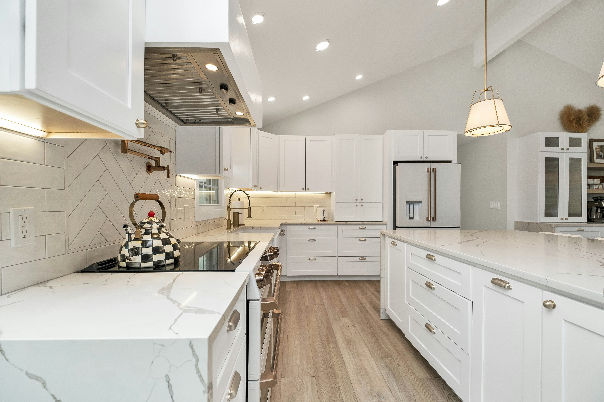
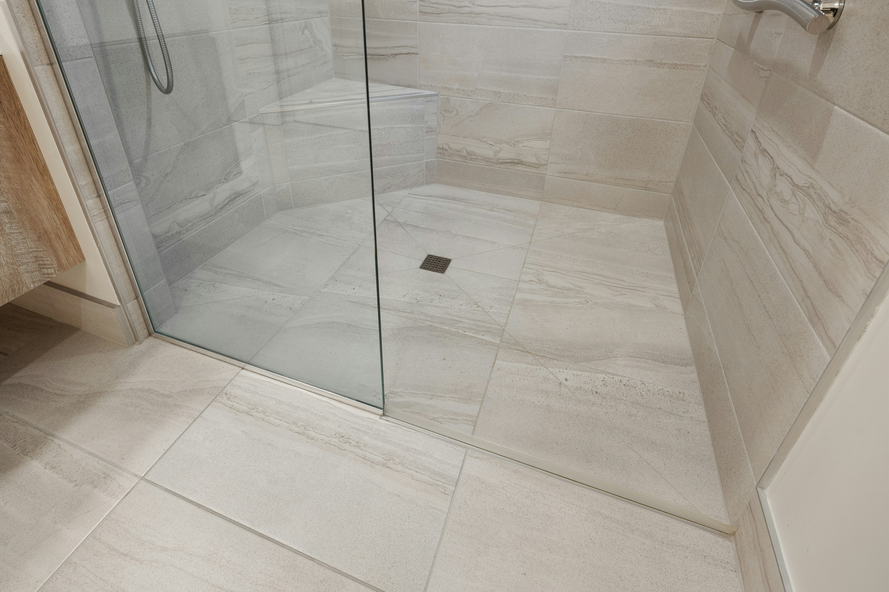
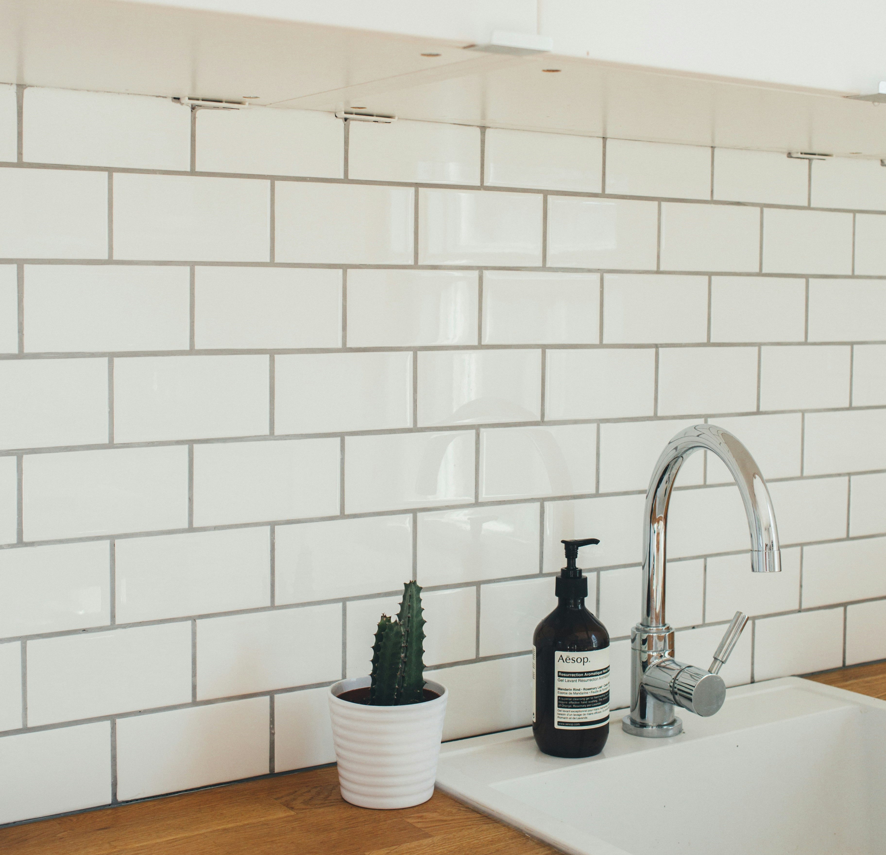
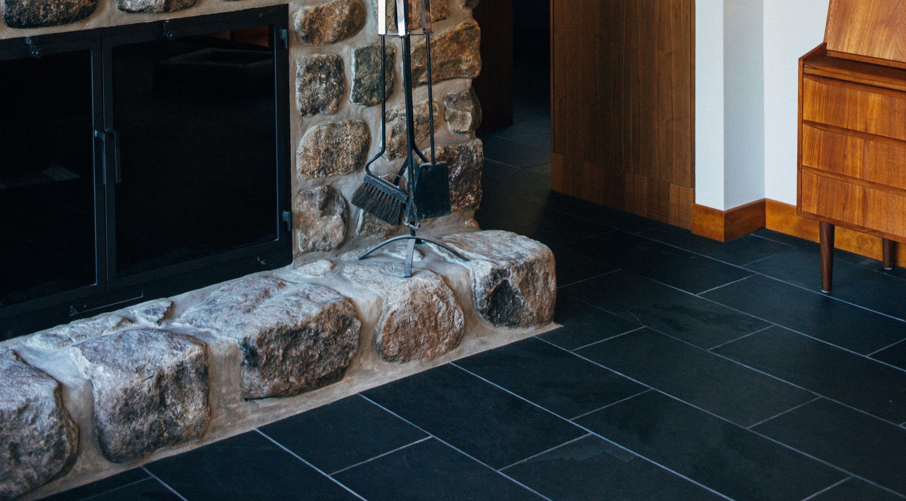

Countertops
Transform your kitchen or bathroom with stunning marble or granite countertops. I provide custom-fitted, durable surfaces that enhance the beauty and functionality of your space, perfect for meal prep, hosting, and everyday use.
Bathrooms
Elevate your bathroom with elegant stone and tile installations, from custom vanities to sleek showers and floors. I specialize in creating luxurious, easy-to-maintain bathroom spaces tailored to your personal style.
Backsplashes
Add a touch of sophistication to your kitchen or bathroom with our expertly installed backsplashes. Using marble, granite, or ceramic tiles, I design eye-catching features that protect your walls while adding visual interest.
Flooring
Upgrade your home with long-lasting, beautiful flooring. Whether it's marble, granite, ceramic, or porcelain, my precision installation ensures a high-quality finish that stands up to everyday wear and tear, combining durability with aesthetic appeal.
